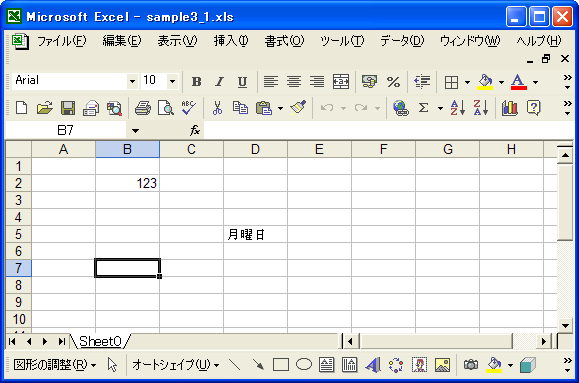

行を作成しシートに追加
POIにおいてはシートは複数の行から成り立っており、その行の中にセルが含まれているように扱います。
新規に作成したシートを実際に表示してみると既にセルが無数に存在しているように表示されますが、実際は空の状態です。シートの中のセルに値を設定する場合には、まず行を作成し、その行の中にセルを作成し、そしてセルに対して値を設定するという手順になります。
では行を作成しシートに追加してみます。行を新規作成してシートに追加するにはSheetインターフェースで用意されているcreateRowメソッドを使います。
createRow Row createRow(int rownum)
Create a new row within the sheet and return the high level representation Parameters: rownum - row number Returns: high level Row object representing a row in the sheet
引数には行番号を指定します。一番上の行の行番号は0で順に1、2、と続いていきます。メソッドの戻り値としてRowインターフェースを実装したクラスのオブジェクトが返されます。
Rowインターフェースは「ss」ユーザーモデルに基づいたもので、行を作成するためのHSSFRowクラスやXSSFRowクラスに共通するスーパーインターフェースです。
実際の使い方は次のようになります。
Workbook wb = new HSSFWorkbook(); Sheet sheet = wb.createSheet(); Row row = sheet.createRow(2);
この場合、行番号が2の行(一番上から数えて3つ目の行)を作成します。なお行は先頭から順に作成する必要はありません。例えば行番号1の行を作成する場合に先に行番号0の行を作成しておく必要はありません。
サンプルプログラム
実際に試してみましょう。
import org.apache.poi.hssf.usermodel.HSSFWorkbook;
import org.apache.poi.ss.usermodel.Workbook;
import org.apache.poi.ss.usermodel.Sheet;
import org.apache.poi.ss.usermodel.Row;
import org.apache.poi.ss.usermodel.Cell;
import java.io.*;
public class Sample3_1{
public static void main(String[] args){
Workbook wb = new HSSFWorkbook();
Sheet sheet = wb.createSheet();
Row row1 = sheet.createRow(1);
Cell cell1_1 = row1.createCell(1);
cell1_1.setCellValue(123);
Row row4 = sheet.createRow(4);
Cell cell4_3 = row4.createCell(3);
cell4_3.setCellValue("月曜日");
FileOutputStream out = null;
try{
out = new FileOutputStream("sample3_1.xls");
wb.write(out);
}catch(IOException e){
System.out.println(e.toString());
}finally{
try {
out.close();
}catch(IOException e){
System.out.println(e.toString());
}
}
}
}
今回は新規にシートを作成し、そのシートの中に行番号1と4の行を作成しました。そして行番号1の行には列番号1の位置にセルを作成し、そのセルに数値を設定しています。また行番号4の行には列番号3の位置にセルを作成し、そのセルに文字列を作成しています。最後に名前を付けてワークブックを保存します。それでは作成されたファイルをExcelで開いてみます。

指定した行の指定した位置にあるセルにそれぞれ値が設定されていることが確認できます。
( Written by Tatsuo Ikura )

著者 / TATSUO IKURA
初心者～中級者の方を対象としたプログラミング方法や開発環境の構築の解説を行うサイトの運営を行っています。